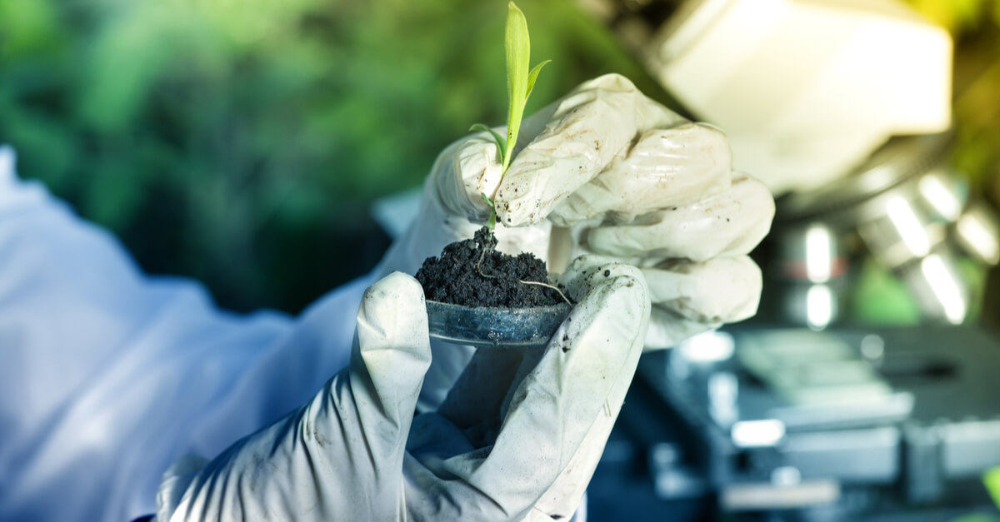
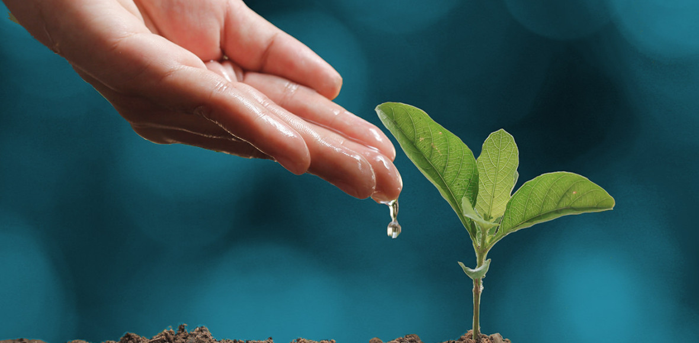
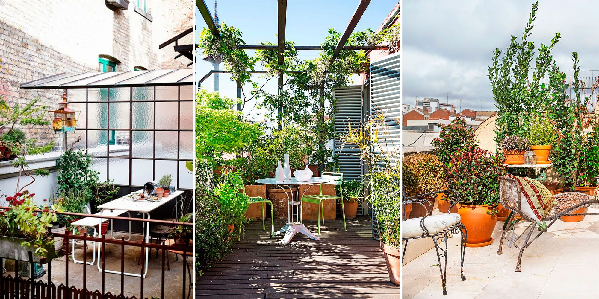

Plagas mundiales que afectan a los cultivos, la silvicultura y los ecosistemas
Desde su domesticación, hace unos 10 000 años, los cultivos se han visto amenazados por una multitud de plagas que provocan pérdidas de rendimiento que, a su vez, a menudo conducen al hambre y al malestar social. En promedio, a escala mundial, entre el 10% y el 28% de la producción de cultivos se pierde a causa de las plagas (Savary et al., 2019). Además, se observan otras pérdidas posteriores a la cosecha, con los peores escenarios en los países en desarrollo. Por otra parte, además de las pérdidas, la presencia de micotoxinas (toxinas producidas por hongos) en los alimentos y los piensos puede amenazar gravemente la salud de las personas y el ganado (Magan, Medina y Aldred, 2011; Van Der Fels-Klerx, Liu y Battilani, 2016).

Suelos
En República Dominicana el estudio de suelo se realizó en 1967, en el marco del proyecto “Reconocimiento y Evaluación de los Recursos Naturales de la República Dominicana”, auspiciado por la Organización de los Estados Americanos (OEA).
El principal objetivo del estudio fue levantar y poner a disposición de las autoridades dominicanas una base científico-técnica de informaciones útiles para la clasificación de los suelos dominicanos, que sirviera de herramienta para la planificación del desarrollo y extensión agrícola.
Con el levantamiento de informaciones sobre los suelos, y el análisis de fotografías aéreas a escala 1:60,000, se delimitaron unidades geomorfológicas que corresponden a asociaciones de suelos y en algunos casos a Series.
Se determinaron los perfiles representativos de las unidades de suelos establecidas, con su respectiva toma de muestras para análisis físico y químico.
El estudio estableció más de cien asociaciones de suelos que fueron agrupadas según las principales características de los suelos predominantes, resultando diez grandes grupos: Suelos de Sabanas; Suelos Arcillosos no Calcáreos; Suelos de origen Calcáreo; Suelos de origen Igneo, Volcánico y Metamórfico; Suelos Aluviales Recientes; Ciénagas; Playa Costera y Dunas; Suelos Orgánicos; Terrenos Cársicos; y Terrenos Escabrosos de Montaña.

6 Razones que evidencian la importancia del agua en las plantas
Germinación de semillas
Según Growing Anything, germinación es el proceso de una planta recién nacida que emerge de su semilla. Esta necesita agua para activar las enzimas encargadas de dirigir el proceso de germinación. También ayuda a la semilla a que pueda hincharse y suavizarse para permitir que la planta salga.
Proceso de fotosíntesis
Este proceso es por medio del cual las plantas preparan su alimento para sobrevivir y crecer. El agua es el centro de este proceso ya que necesita el hidrógeno presente en esta. Además también necesitan una pequeña cantidad de oxígeno para facilitar la fotosíntesis, el cual también obtienen del agua. Para esto también necesita sol y dióxido de carbono.
Translocación
Se le denomina así al movimiento del agua a través de las diferentes partes de la planta. Por medio de este se transportan los nutrientes y minerales desde el suelo hasta las hojas. Esto se da gracias a la acción capilar, la cual utiliza la tensión del agua para moverse alrededor de toda la estructura.
Estructura de la planta
Las plantas no tienen un esqueleto interno o externo que les ayuden a tener una estructura. Por lo tanto hacen uso de la presión del agua en sus células para crecer y mantenerse rígidas. Esta presión recibe el nombre de “turgencia”.
Esta fuerza conserva una buena flexibilidad por ser derivada de una fuente líquida. Lo cual le permite que se adapte a su entorno doblándose con el viento y moviéndose en dirección del sol para absorber la mayor cantidad de energía para realizar la fotosíntesis.
Transpiración
La transpiración es el proceso mediante el cual el agua es arrastrada desde las raíces hasta el tallo y fuera de la planta. Es útil para permitir la entrada de dióxido de carbono desde el aire, enfriar la planta y ayudar que fluyan los nutrientes por toda la planta.
Creación de hábitats
Como mencionamos anteriormente en el papel del agua en los ecosistemas existe una gran cantidad de seres vivos que necesitan un entorno acuático para sobrevivir. Entre estos se encuentran los estanques, ríos, lagos y mares. Donde habitan miles de especies de plantas que necesitan condiciones húmedas para crecer.

Diseñar y aprovechar al máximo jardines y terrazas pequeños
Planificación inteligente del espacio:
Antes de comenzar a diseñar tu jardín o terraza, es fundamental realizar una planificación inteligente. Toma medidas precisas del área disponible y analiza cómo aprovechar cada centímetro. Por ejemplo, considerando el uso de macetas colgantes o jardines verticales para añadir vegetación y frescura sin ocupar mucho espacio y dejando el suelo más diáfano.